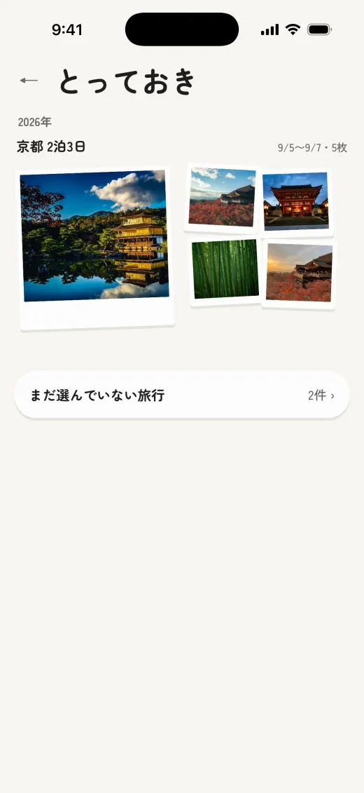
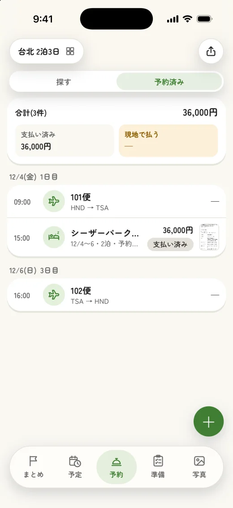
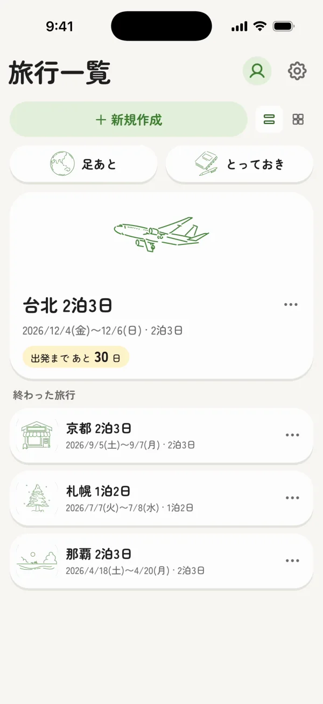
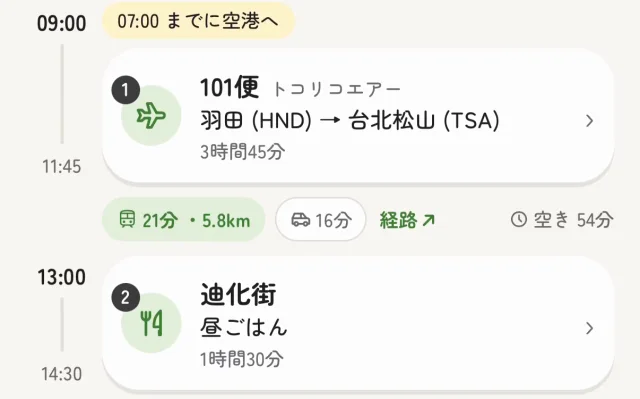
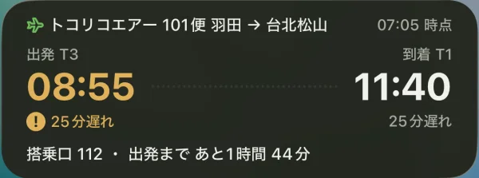
たとえば台湾旅行も、地図に置くだけで計画できます。
地図
地図で探して、
そのまま予定に
写真や営業時間を見ながら、行きたい場所を旅程に入れられます。
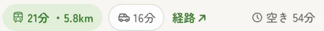
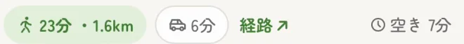
中山区
中正区
中正紀念公園
1
2
3
1
台北 2泊3日
場所の名前・住所
中正紀念堂
閉じる
国立中正紀念堂
100 台湾 台北市 中正区
12/1(火)1日目
12/2(水)2日目
12/3(木)3日目
09:00
101便羽田 (HND) → 台北松山 (TSA)
21分 ・ 5.8km
空き 54分
13:00
迪化街昼ごはん
09:30
国立中正紀念堂9:30 〜 10:30
16分 ・ 1.2km
空き 1時間14分
12:00
永康街昼ごはん
まとめ
予定
予約
準備
写真
国立中正紀念堂
文化的ランドマーク
営業中 ・ 営業終了 18:00
旅行に追加
場所の情報を入力
場所
いつ行く
名前国立中正紀念堂
住所100 台湾 台北市 中正区
日にち
1日目 12/1
2日目 12/2
3日目
始まり
--:--
9:30
15分前
終わり
--:--
10:30
15分前
＋ 予約を追加
登録する
12日目 9:30 国立中正紀念堂
宿
宿の候補を、
行く場所と並べて
控えた宿の値段を、地図の上で見比べられます。
台北 2泊3日
探す
予約済み
宿12/1 〜 12/3・2泊
↗ホテル 中山¥18,000 ・ 夜市まで徒歩5分
›ホテル 信義¥46,000 ・ 夜景がきれい
›ホテル 大安¥24,000 ・ 駅から徒歩2分・朝食付き
›＋ 候補を足す
地図で見比べる
気になる宿は見つかりましたか？
候補を地図に置く
予約を入れる
まとめ予定予約準備写真
候補を登録
名前ホテル 大安
地図の場所台北市 大安区
値段¥24,000
ひとことメモ駅から徒歩2分・朝食付き
登録する
中山
信義
大安
台北駅
2
1
3
¥18,000
¥46,000
¥24,000
←候補を見比べる
ホテル 中山候補・宿泊
値段¥18,000
メモ夜市まで徒歩5分
ホテル 大安候補・宿泊
値段¥24,000
メモ駅から徒歩2分・朝食付き
予約を入れる
✦AIで読み取る
✎手動で登録
中山
大安
1
2
3
台北 2泊3日
12/1(火)1日目
12/2(水)2日目
12/3(木)3日目
09:00
101便羽田 (HND) → 台北松山 (TSA)
21分 ・ 5.8km空き 3時間
15:00
ホテル 大安チェックイン
まとめ予定予約準備写真
気になった宿を控える
行く場所と並べて比べる
フライトプレミアム
開かなくても、
便のいまが分かる
ロック画面とホーム画面に、便の遅れや搭乗口、今と次の予定が出ます。遅れや搭乗口が変わったときは、お知らせでも届きます。
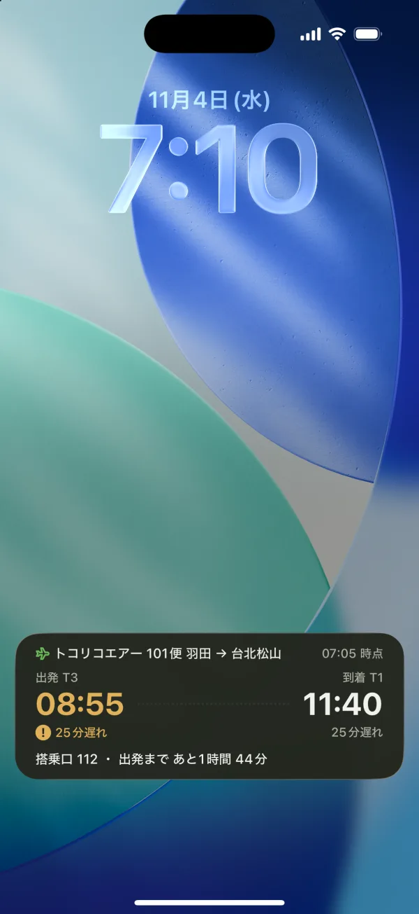
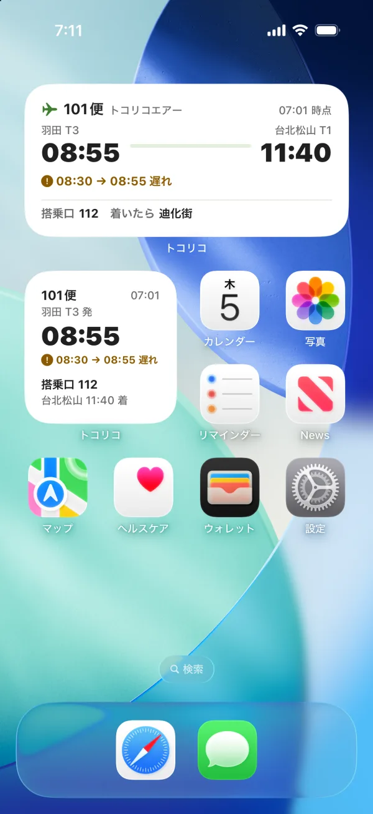
予約
予約の画面から、
旅程へ
予約のスクリーンショットを AI が読み取り、予定に入れます。
✦ AIで読み取りました記録
写真も、とっておきも、
旅行ごとに
写真・とっておき・足あとが、その旅行に紐づいて残ります。
共有
一緒に行く人と、
同じ旅程を
リンクを送るだけで、旅程や写真を共有できます。
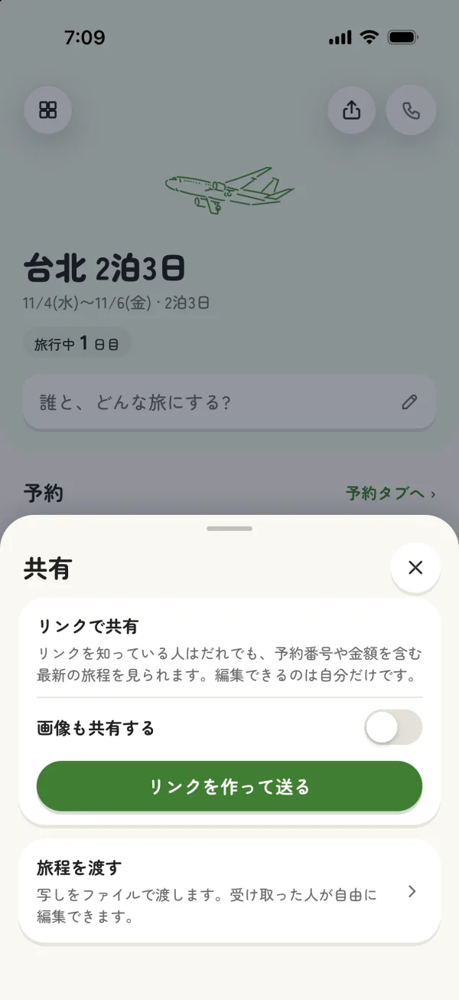
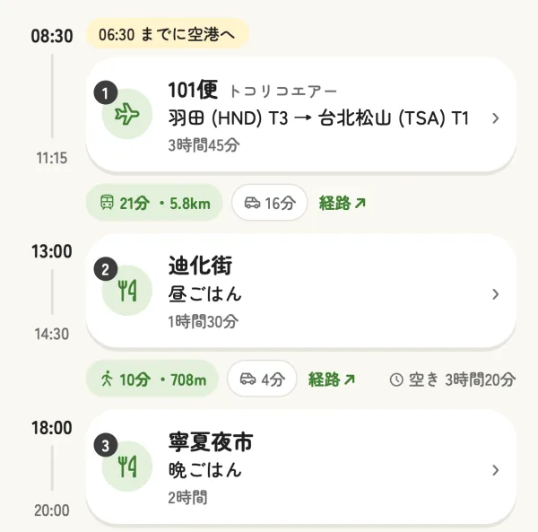
トコリコ プレミアム旅行中の安心と、
旅行中の安心と、
思い出の残し方を広げる
年額プラン4か月分お得
4,800円 / 年(月あたり400円)
月額プラン 600円 / 月
無料
- 旅行中の安心
- フライト情報のお知らせ
- ウィジェットとライブアクティビティ
- 予定の通知のタイミングを選べる決まった時間
- 予約の登録
- 予約内容をAI解析で登録旅行ごとに3回
- 予約メールを転送で登録
- 旅の記録
- 旅行ごとに写真と動画を保存写真だけ 2GB
- その旅行のハイライトを記録
- 旅行とマイページに自分の写真
- 画像のバックアップ
おすすめ
トコリコ プレミアム
- 旅行中の安心
- フライト情報のお知らせ遅れ・搭乗口の変更など
- ウィジェットとライブアクティビティ
- 予定の通知のタイミングを選べる
- 予約の登録
- 予約内容をAI解析で登録予約のスクリーンショットたっぷり
- 予約メールを転送で登録
- 旅の記録
- 旅行ごとに写真と動画を保存写真と動画 50GB
- その旅行のハイライトを記録お気に入りの写真ベスト5
- 旅行とマイページに自分の写真表紙とプロフィールの写真
- 画像のバックアップ予約画像や表紙を預けて安心
1か月無料で始める
初めての方は1か月無料、その後 年額4,800円
いつでも解約できます
よくある質問
無料で使えますか?
基本の機能は無料です。トコリコ プレミアムは年額4,800円(初めての方は1か月無料)、または月額600円です。
ログインは必要ですか?
ログインしなくても使えます。AI の読み取りなど一部の機能は、ログインすると使えるようになります。ログインは Apple のアカウントで行いますが、名前やメールアドレスの共有は不要です。
Android でも使えますか?
トコリコは iPhone(iOS 18 以上)のアプリです。Android やパソコンでは使えませんが、共有された旅程はリンクからブラウザで見られます。
国内旅行でも使えますか?
使えます。地図での予定づくり・予約・記録・共有は、国内でも海外でも同じように使えます。
トコリコ
地図で作る旅のしおり・旅行計画
無料で始める